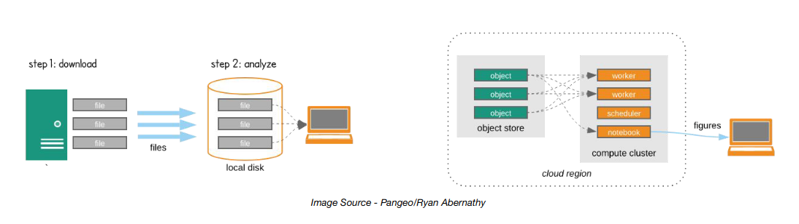
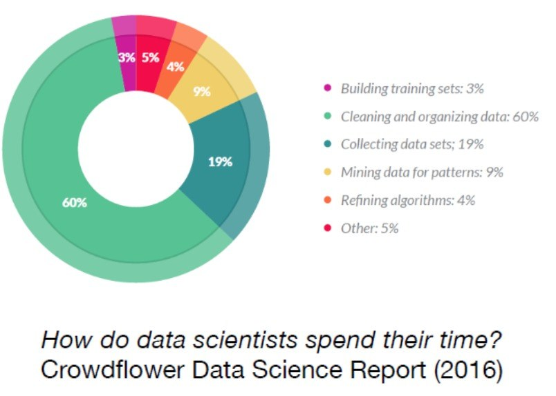
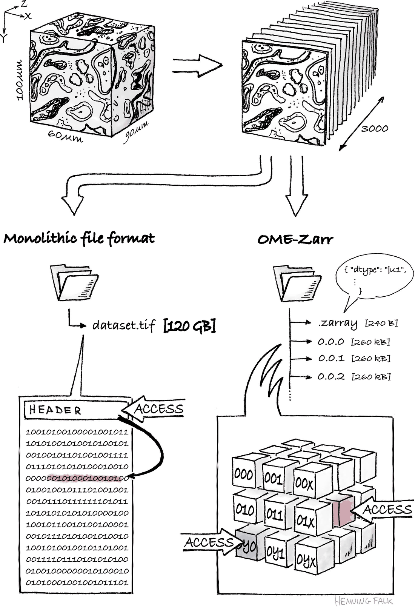
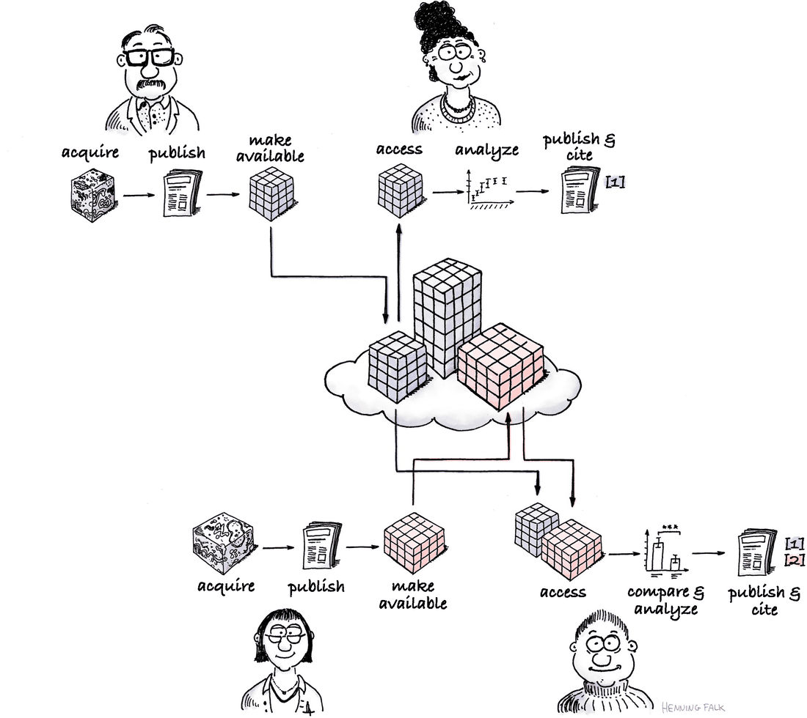

flowchart LR
A["1. Caché<br/>copiar archivos de origen<br/>a un bucket temporal"] --> B["2. prepare_target<br/>leer metadatos y crear<br/>un Zarr vacío"]
B --> C["3. store_chunks<br/>llenar cada chunk<br/>en paralelo, sin orden"]
C --> D["4. Finalización<br/>consolidar metadatos<br/>en un solo JSON"]
ARCO: datos listos para el análisis y optimizados para la nube
Analysis-Ready, Cloud-Optimized (ARCO): qué son, por qué importan y cómo se usan
Introducción
Durante décadas, trabajar con datos del sistema Tierra (satélites, reanálisis, modelos climáticos y oceánicos) siguió el mismo ritual: buscar el conjunto de datos en el portal de un centro de datos, descargar cientos o miles de archivos NetCDF, GRIB o HDF, limpiarlos, unirlos y, por fin, analizarlos. Ese ritual funcionaba cuando los datos medían gigabytes. Hoy miden terabytes y petabytes, y el ritual se ha vuelto el cuello de botella de la ciencia.
ARCO (Analysis-Ready, Cloud-Optimized, en español “listo para el análisis y optimizado para la nube”) es la respuesta que ha construido la comunidad científica de datos abiertos, en particular el ecosistema Pangeo, y que hoy adoptan NASA, NOAA, NCAR, Copernicus y Google. La idea cabe en una frase: que el dato llegue preparado para el análisis y organizado para que se pueda leer solo la parte que se necesita, directamente desde la nube y sin descargar archivos completos.
Este artículo es una nota de estudio. Su objetivo es entender el concepto ARCO a partir de cuatro fuentes principales:
- El artículo de Stern et al. (2022) en Frontiers in Climate, que define ARCO con precisión y describe Pangeo Forge, una plataforma para producir datos ARCO de forma colaborativa.
- La charla de NCAR sobre los datos ARCO del archivo GDEX (Hampapura, 2026).
- El panel de NOAA sobre ARCO para la ciencia abierta, con ponentes de NOAA, NASA, HPE y Development Seed (Shrestha e Indiviglio, 2022).
- El seminario de NASA PO.DAAC sobre conjuntos de datos virtuales (Henze y Armstrong, 2025).
Lo complemento con el cuaderno introductorio en español de Project Pythia (Ladino-Rincón et al., s. f.), del que reutilizo varias figuras citando su origen, y con documentación de NASA, NOAA, Google, Copernicus Marine, la guía de formatos optimizados para la nube de la Cloud-Native Geospatial Forum y los proyectos Zarr, VirtualiZarr e Icechunk.
NotaRelación con otros artículos del sitio
El artículo Bases de datos presenta los formatos nativos de la nube (Parquet, COG, Zarr) y los cubos de datos. Aquí me concentro en la idea de ARCO: qué significa cada mitad del término, cuáles son las tres maneras de lograrlo, cómo se producen estos datos y qué limitaciones tienen. Los ejemplos de código están en Python y se muestran sin ejecutar.
El problema: el modelo de descarga
Un flujo de trabajo que se volvió heredado
Hampapura (2026) describe el flujo típico de un usuario remoto de un archivo de datos científicos:
- Ir al repositorio (GDEX, en el caso de NCAR).
- Localizar el conjunto de datos y averiguar dónde están los archivos.
- Seleccionarlos todos y descargarlos al computador, a un clúster local o a la nube.
- Limpiar y organizar los archivos.
- Llegar, finalmente, al análisis.
Según Hampapura, este flujo “se está volviendo heredado” por varias razones:
- Consume tiempo y es ineficiente. Se descargan archivos completos aunque solo se necesite una fracción de los bytes.
- Exige almacenamiento que no todos tienen.
- No escala para análisis grandes.
- Dificulta compartir, porque los colaboradores no usan el mismo almacenamiento.
- Encaja mal con el aprendizaje automático, que necesita alimentar modelos con grandes volúmenes de datos de manera continua.
- Varía según el proveedor: la experiencia de transferencia cambia de un repositorio a otro.
Stern et al. (2022) llaman a este esquema el modelo de descarga y le oponen un nuevo paradigma, la computación próxima a los datos (data-proximate computing): el cómputo se lleva a donde están los datos, el usuario trabaja desde un navegador y recupera datos mediante APIs o HTTP.

Los datos crecen más rápido que la capacidad de descargarlos
El volumen de los archivos de datos del sistema Tierra crece de forma exponencial. Hampapura mostró que el archivo de NCAR, cuyo antecesor nació en 1965, sigue una curva exponencial. Lo mismo ocurre en NASA, NOAA y otros centros. En el panel de NOAA, Radhakrishnan señaló que la Earth System Grid Federation (ESGF) aloja del orden de 20 petabytes de simulaciones CMIP6.
A esto se suma un costo humano. Varios ponentes del panel de NOAA citaron estudios según los cuales los científicos de datos dedican entre el 60 % y el 80 % de su tiempo a recolectar, limpiar y organizar datos, no a analizarlos. La cifra más citada viene de una encuesta de CrowdFlower (2016): limpiar y organizar datos ocupa el 60 % del tiempo, y recolectarlos, otro 19 % (Figura 2). ARCO busca reducir esa fracción.

TipUn caso extremo, pero real
En la charla de NCAR, una investigadora comparaba el reanálisis ERA5 con datos de perfiladores de viento. Su flujo de trabajo (descargar ERA5, limpiarlo, organizarlo y compararlo nivel por nivel) tomaba hasta una semana. Con la copia ARCO de ERA5 alojada en GDEX y sus propios datos convertidos a Zarr, el mismo análisis tomó 20 segundos. El propio Hampapura advierte que no es un caso típico. Sin embargo, cuando el cuello de botella es el acceso a los datos, ARCO suele resolverlo.
Primera mitad: “listo para el análisis”
Un concepto relativo
El término datos listos para el análisis (analysis-ready data, ARD) nació en la teledetección. Allí designaba una pila temporal de imágenes satelitales a las que ya se les habían aplicado las correcciones necesarias. El Committee on Earth Observation Satellites (CEOS) define los CEOS-ARD como datos satelitales “procesados según un conjunto mínimo de requisitos y organizados de forma que permiten el análisis inmediato”, con un esfuerzo adicional mínimo del usuario e interoperables en el tiempo y con otros conjuntos de datos (CEOS, s. f.).
Stern et al. (2022) generalizan el término: un conjunto de datos es listo para el análisis cuando ha sido preprocesado para cumplir los estándares de calidad que exige un análisis determinado. De ahí se sigue algo importante, que Hampapura también subraya: ser “listo para el análisis” es relativo. Un conjunto de datos puede estar listo para un usuario y un caso de uso, y no para otro.
Qué pasos de preprocesamiento se quieren evitar
Para concretar, Hampapura enumera los pasos que un usuario quisiera encontrar ya hechos, por ejemplo, en la salida de un modelo del sistema Tierra como CESM:
| Grupo | Ejemplos |
|---|---|
| Limpieza | Convertir la salida cruda del modelo a formatos comunes (NetCDF, Zarr); nombres de variables consistentes; unidades declaradas; valores faltantes bien marcados |
| Integración | Poder combinar el dato con observaciones de campo, con otros modelos o con datos de otras disciplinas |
| Transformaciones comunes | Reinterpolar a otra rejilla (regridding), convertir unidades, alinear coordenadas |
| Control de calidad | Correcciones de señal (teledetección), verificación de valores y homogeneización de metadatos entre miembros de un ensamble (simulaciones) |
| Unión de archivos | Concatenar miles de archivos diarios en un solo objeto continuo en el tiempo |
En términos prácticos, un dato listo para el análisis es aquel cuya cadena de preprocesamiento ya se minimizó para que el usuario llegue a la ciencia lo más rápido posible.
Segunda mitad: “optimizado para la nube”
El problema del archivo monolítico
Un archivo NetCDF o HDF tradicional es un bloque único: un encabezado con metadatos y, a continuación, los datos. Para leer una porción pequeña desde un disco local esto no es grave. Pero cuando el archivo vive en un almacenamiento de objetos en la nube (Amazon S3, Google Cloud Storage, Azure Blob) y se accede por HTTPS, cada consulta tiene latencia. Leer un recorte puede exigir primero abrir el encabezado, recorrer los metadatos y hacer muchas peticiones pequeñas, o simplemente descargar el archivo entero.
Un formato optimizado para la nube resuelve esto. Stern et al. (2022) lo definen por la entrada/salida: son formatos que permiten acceder directamente a subconjuntos de datos sin el costo computacional de abrir y recorrer un objeto enorme. Lo consiguen de dos maneras: con un encabezado de metadatos que mapea rangos de bytes, o dividiendo los datos en muchos bloques pequeños organizados jerárquicamente.
La Figura 3 lo ilustra con un ejemplo de microscopía. A la izquierda, en un archivo monolítico de 120 GB, para llegar a un fragmento hay que pasar por el encabezado y recorrer el archivo. A la derecha, en Zarr, los metadatos ocupan un archivo pequeño (.zarray) y cada fragmento de 260 kB es un objeto con nombre propio (0.0.0, 0.0.1…) al que se accede directamente.

Esquemáticamente:
Formato monolítico (NetCDF, HDF) Formato optimizado (Zarr)
┌──────────────────────────┐ datos.zarr/
│ encabezado / metadatos │ ├── zarr.json ← metadatos (1 lectura)
├──────────────────────────┤ └── sst/
│ ░░░░░░░░░░░░░░░░░░░░░░░░ │ ├── c/0/0/0 ← chunk independiente
│ ░░░░░░░░░░████░░░░░░░░░░ │ ← lo que ├── c/0/0/1
│ ░░░░░░░░░░░░░░░░░░░░░░░░ │ necesito ├── c/0/1/0 ← solo pido este
└──────────────────────────┘ └── ...
Hay que recorrer o descargar Se pide en paralelo solo
el archivo para llegar al dato lo que cubre el recorteEl patrón común de los formatos optimizados
La guía de formatos geoespaciales optimizados para la nube (Cloud-Native Geospatial Forum, con apoyo de NASA IMPACT y Development Seed) resume en cuatro rasgos lo que tienen en común:
- Los metadatos o la especificación dan la dirección de cada bloque de datos.
- Los metadatos están en un formato y un lugar consistentes.
- Todos los metadatos se cargan en una sola lectura.
- Las bibliotecas leen subconjuntos mediante fragmentos direccionables (chunks) o teselado interno.
La guía añade una advertencia: “la red introduce latencia, y hay que considerar el número de peticiones”. Por eso, muchos fragmentos diminutos pueden ser tan malos como un archivo monolítico.
Requisitos prácticos
En las charlas de NCAR y NOAA aparecen los mismos requisitos, formulados desde el punto de vista del usuario:
- Compatible con el almacenamiento de objetos y accesible por HTTP(S), sin capas adicionales.
- Lectura y escritura en paralelo sobre un mismo almacén de datos.
- Acceso a subconjuntos (chunks) sin leer el resto.
- Carga perezosa (lazy loading): primero se leen solo los metadatos, que dicen qué datos hay y dónde están; los valores reales se traen únicamente cuando se calcula algo.
- Integración con el ecosistema existente, en especial xarray y Dask en Python, para que el usuario no tenga que aprender una herramienta nueva.
ARCO: las dos mitades juntas
Stern et al. (2022) unen las dos ideas en una definición:
Los conjuntos de datos ARCO son aquellos que han recibido el preprocesamiento necesario para cumplir los estándares de calidad de una tarea analítica concreta y que, además, se almacenan en formatos que permiten un acceso directo y eficiente a subconjuntos de datos.
Los autores insisten en que un dato listo para el análisis no es necesariamente optimizado para la nube. Que un algoritmo pueda usarlo no significa que pueda usarlo con eficiencia. ARCO exige las dos propiedades a la vez.
En la práctica, Radhakrishnan (panel de NOAA) lo resumió así: con datos ARCO ya no movemos datos voluminosos; acercamos el cómputo a donde residen los datos. El usuario deja de pensar en archivos y piensa en conjuntos de datos: un solo objeto de xarray con todas las fechas, las variables, los metadatos y una fragmentación pensada para el análisis.
Tres caminos hacia ARCO
Barciauskas y Kirk (Development Seed, panel de NOAA) propusieron organizar los servicios de datos de observación de la Tierra en tres paradigmas. Sirven como mapa para entender las opciones actuales.
| Paradigma 1: herramientas convencionales sobre datos de archivo | Paradigma 2: formatos nuevos construidos desde el archivo | Paradigma 3: metadatos optimizados sobre el archivo original | |
|---|---|---|---|
| Qué se hace | Se pregeneran pirámides de imágenes (teselas RGB) para visualizar | Se reescriben los datos en un formato optimizado (Zarr, COG) | Se crea un índice de referencias que apunta a los bytes de los archivos originales |
| Copias del dato | Imágenes derivadas, no datos | Una copia nueva | Ninguna; solo un archivo de referencias |
| Ventajas | Muy rápido y escalable para mapas; servir millones de teselas cuesta poco | Visualización dinámica, series de tiempo calculadas desde los valores reales, fragmentación a la medida | No hay que reprocesar ni duplicar petabytes; el archivo oficial sigue siendo la fuente |
| Desventajas | Paletas de color fijas, pérdida de precisión; no sirve para ciencia | Duplica almacenamiento y hay que mantener la copia actualizada | Queda limitado por la fragmentación y la compresión del archivo original |
| Ejemplos | Teselas de NASA GIBS/Worldview | ARCO-ERA5 en Zarr, COG de Sentinel-2 | Kerchunk, VirtualiZarr, Icechunk virtual, conjuntos virtuales de PO.DAAC |
Los paradigmas 2 y 3 permiten la carga perezosa, así que el usuario no tiene que descargar ni mover archivos. El paradigma 3 está ganando terreno porque evita reprocesar los datos, pero hereda sus defectos: si el archivo original no tiene fragmentación interna, el índice virtual no puede inventarla.
Paradigma 2: convertir a Zarr
Zarr es la especificación abierta de arreglos N-dimensionales fragmentados y comprimidos que se ha vuelto el estándar de facto de ARCO para datos en rejilla. Hampapura usa “optimizado para la nube” y “Zarr” casi como sinónimos, aunque aclara que el primero es un concepto amplio y el segundo un formato concreto. Cada chunk es un objeto independiente con nombre predecible (0.0.0, 0.0.1, etc.) que se puede pedir directamente, y los metadatos se consolidan en un solo archivo JSON (Stern et al., 2022).
El ejemplo más conocido es ARCO-ERA5, una copia curada del reanálisis ERA5 del ECMWF en Google Cloud, convertida de GRIB a Zarr por Google Research (Carver y Merose, 2023). El repositorio ofrece versiones cloud-optimized (la rejilla original) y analysis-ready (reinterpolada a 0,25°). Por ejemplo, el almacén full_37-1h-0p25deg-chunk-1.zarr-v3 tiene 37 niveles de presión, datos horarios y un tamaño de unos 2 petabytes.
import xarray as xr
# Abrir ~2 PB de ERA5 en segundos: solo se leen los metadatos
ds = xr.open_zarr(
"gs://gcp-public-data-arco-era5/ar/full_37-1h-0p25deg-chunk-1.zarr-v3",
chunks=None,
storage_options=dict(token="anon"), # acceso anónimo
)
ds = ds.sel(time=slice(ds.attrs["valid_time_start"], ds.attrs["valid_time_stop"]))
# Temperatura a 2 m sobre Colombia en enero de 2024: solo se descargan esos chunks
t2m = ds["2m_temperature"].sel(
time="2024-01",
latitude=slice(13, -5), # ERA5 ordena la latitud de norte a sur
longitude=slice(281, 293), # 0–360°: 79 °O a 67 °O
)
media = (t2m.mean("time") - 273.15).compute()En los datos raster de observación de la Tierra, el equivalente es el Cloud Optimized GeoTIFF (COG): un GeoTIFF con teselado interno y vistas generales (overviews), legible por rangos de bytes. NASA VEDA y Development Seed combinan COG con un catálogo STAC y servicios como TiTiler para generar mapas y series de tiempo dinámicas desde los datos reales.
Paradigma 3: conjuntos de datos virtuales
La alternativa a copiar los datos es virtualizarlos. Una herramienta lee los metadatos de cada archivo NetCDF4, HDF5 o GRIB y escribe un archivo de referencias que dice, para cada chunk lógico, en qué archivo y en qué rango de bytes está. Para el usuario, el resultado se comporta como un almacén Zarr, aunque los bytes sigan en los archivos originales.
Henze (PO.DAAC) usa una analogía: leer los archivos de la forma tradicional es como leer un libro de principio a fin para encontrar un capítulo. El conjunto de datos virtual es el índice del libro, que permite ir directo a las páginas que interesan. Este índice es un archivo pequeño (de unos pocos a decenas de megabytes, y hasta unos 100 MB para series largas), y basta con su enlace para abrir el conjunto completo.
Las herramientas han evolucionado rápido:
- Kerchunk fue la primera. Crea referencias en JSON o Parquet. Stern et al. (2022) la usaban en la receta
HDFReferenceRecipede Pangeo Forge, y GDEX la usa para lo que no puede convertir a Zarr. - VirtualiZarr, inspirada en Kerchunk, ofrece casi las mismas funciones con mantenimiento activo. Ensambla muchos archivos en un hipercubo, permite leerlos al vuelo como Zarr y guarda el resultado en Kerchunk o en Icechunk.
- Icechunk, creado por Earthmover, es un motor de almacenamiento transaccional para Zarr. Agrega transacciones ACID (cada commit se aplica completo o no se aplica), control de versiones con ramas, etiquetas e instantáneas, e ingesta sin copia de NetCDF, HDF5, GRIB y TIFF mediante chunks virtuales. Permite citar una versión exacta de los datos en un artículo.
PO.DAAC ofrece hoy sus conjuntos virtuales en formato Icechunk (preferido) y Kerchunk, y advierte que el formato Kerchunk podría retirarse en favor de Icechunk.
# Crear un almacén virtual con VirtualiZarr y guardarlo en Icechunk (esquema general)
from virtualizarr import open_virtual_mfdataset
import icechunk
vds = open_virtual_mfdataset(urls, parser=parser, registry=registry) # urls: lista de NetCDF
repo = icechunk.Repository.create(storage)
session = repo.writable_session("main")
vds.vz.to_icechunk(session.store)
session.commit("Crea el almacén virtual")Leer un repositorio Icechunk público es igual de breve. Este código, tomado de un cuaderno propio, abre la serie diaria completa de NOAA OISST v2.1 (desde 1981) desde un repositorio Icechunk cuyas referencias apuntan a los NetCDF oficiales de NOAA en AWS:
import icechunk, xarray as xr
URL = "https://data.source.coop/ocean-icechunks/noaa-oisst/oisst.icechunk"
repo = icechunk.Repository.open(icechunk.http_storage(URL))
cred = icechunk.containers_credentials(
{p: icechunk.s3_anonymous_credentials() for p in repo.config.virtual_chunk_containers}
)
store = repo.reopen(authorize_virtual_chunk_access=cred).readonly_session("main").store
oisst = xr.open_zarr(store, group="daily", consolidated=False, chunks={})
# SST diaria en un punto del Pacífico colombiano (isla Gorgona)
serie = oisst.sst.isel(zlev=0).sel(lat=2.97, lon=360 - 78.18, method="nearest").load()La fragmentación lo decide todo
No existe una fragmentación universal
La disposición interna de los bytes (chunking) es la decisión técnica más importante de un conjunto ARCO. Stern et al. (2022) lo ilustran con el caso clásico: un análisis de series de tiempo y un análisis espacial exigen fragmentaciones opuestas.
- Si cada chunk contiene un día completo de todo el globo (
time: 1), dibujar un mapa es inmediato, pero extraer la serie de 40 años de un punto obliga a leer más de 14 000 chunks. - Si cada chunk contiene muchos años de una región pequeña, la serie de tiempo es inmediata, pero el mapa global de un día obliga a leer todos los chunks.
Por eso, algunos proveedores publican el mismo dato con dos fragmentaciones. Copernicus Marine, por ejemplo, ofrece cada producto en una versión Geo Series y otra Time Series, y su herramienta elige la adecuada según la consulta (véase Copernicus Marine). En Pangeo Forge, la fragmentación de salida se fija en la receta (por ejemplo, target_chunks={"time": 10}), y cambiarla implica publicar una nueva versión.
Lecciones aprendidas
Las fuentes coinciden en varias trampas:
- El índice virtual hereda la fragmentación original. Barciauskas creó referencias Kerchunk sobre el producto MUR de temperatura superficial del mar. Las series de tiempo no fueron más rápidas porque los archivos no tenían fragmentación interna, solo un archivo por día.
- NetCDF3 no se presta a la virtualización. En la charla de NCAR, un integrante del equipo explicó que NetCDF3 no admite compresión ni fragmentación interna, así que una referencia virtual obliga a leer la rejilla completa de cada archivo. Recomendó migrar a NetCDF4 o convertir a Zarr.
- Muchos chunks pequeños pesan. Barciauskas citó el caso de ERA5 virtualizado con Kerchunk: abrir unos 12 TB de datos históricos funcionaba, pero solo cargar el mapa de referencias exigía unos 6 GB de memoria, por lo pequeños que eran los chunks originales.
- Hay que diseñar pensando en la nube desde el principio. La conclusión de Development Seed fue que estos problemas se evitan si los formatos de archivo se diseñan pensando en la nube desde el origen, y no solo al final.
Cómo se producen los datos ARCO: Pangeo Forge
El problema de producción
Producir datos ARCO es, según Stern et al. (2022), un proceso artesanal y laborioso. Requiere conocer formatos heredados y modernos, estándares de metadatos, APIs de la nube, computación distribuida y el control de calidad propio de cada disciplina, una combinación de habilidades poco frecuente. El ejemplo que dan es elocuente: la ingesta de una parte de ERA5 en Google Earth Engine tomó nueve meses y un conjunto de herramientas especializadas.
La idea: recetas colaborativas
Pangeo Forge propuso resolverlo como lo hizo conda-forge con el software: con contribuciones de la comunidad. En lugar de paquetes, la comunidad aporta recetas que describen cómo producir un conjunto ARCO.
Sus piezas principales son:
- Receta (
recipe.pyymeta.yaml). Es un módulo de Python que llena una plantilla de algoritmo. El patrón es extraer, optimizar y almacenar: extraer del servidor de origen (HTTP, FTP u OPeNDAP), transformar a ARCO y depositar en almacenamiento de objetos. - FilePattern. Describe las URL de origen y cómo alinear los archivos: concatenar (uno tras otro, por ejemplo en el tiempo) o fusionar (superponer archivos con la misma extensión pero distintas variables).
- Clases de receta.
XarrayZarrRecipecopia los bytes a un almacén Zarr nuevo (paradigma 2).HDFReferenceRecipeusa Kerchunk para escribir solo referencias, sin duplicar datos (paradigma 3). - Feedstock. Es un repositorio público de GitHub por receta. Sirve de trazabilidad: el catálogo enlaza cada conjunto con su feedstock, de modo que se puede saber si un error viene del archivo original o de la producción ARCO.
- Bakery (panadería). Es un clúster en la nube (AWS, Azure o Google Cloud) con su almacenamiento, donde se ejecutan las recetas.
La receta XarrayZarrRecipe sigue cuatro etapas:
El flujo de contribución está automatizado. El colaborador envía un pull request con su receta. GitHub Actions valida los archivos, y un mantenedor lanza una prueba con un subconjunto reducido de los datos. Si todo funciona, se crea el feedstock, se ejecuta la receta completa y se genera la entrada en un catálogo STAC. Las versiones siguen un esquema MAYOR.MENOR: los cambios menores (corregir metadatos, extender el periodo) son compatibles, mientras que los mayores (renombrar variables, cambiar valores) no lo son.
Lo que mostró en la práctica
Los ejemplos del artículo sumaban más de 2,5 TB en el Open Storage Network, un almacenamiento S3 financiado por la NSF:
- NOAA OISST: 14 372 archivos (1981–2021) convertidos en un solo almacén Zarr consolidado.
- Altimetría de Copernicus Marine: unos 70 GB a partir de casi 9000 archivos. Con ellos, una media global del nivel del mar se calcula en menos de un minuto y con pocas líneas de código.
- Intercomparación de modelos oceánicos SWOT: cerca de 1 TB trasladado desde servidores FTP de Francia y Alemania a Google Cloud.
Los autores encontraron que el principal cuello de botella no era el cómputo, sino la descarga desde los servidores de origen: demasiadas peticiones simultáneas reducían el rendimiento. También advirtieron que Pangeo Forge no es un repositorio de archivo permanente: las recetas pueden volver a ejecutarse contra archivos con custodia a largo plazo.
NotaUn matiz sobre la vigencia
El artículo de Stern et al. se publicó en febrero de 2022, cuando Pangeo Forge aún no se había lanzado oficialmente. Varias funciones descritas allí eran planes. Lo que perdura es el modelo conceptual: recetas abiertas, trazabilidad de cada byte, versiones y catálogo. Herramientas posteriores como VirtualiZarr e Icechunk retoman muchas de esas ideas.
Descubrir los datos: catálogos
Un conjunto ARCO no sirve si nadie lo encuentra. Todas las fuentes coinciden en acompañar los datos con catálogos legibles por máquinas:
- STAC (SpatioTemporal Asset Catalog). Es un estándar ligero en JSON para describir activos geoespaciales, con una extensión para cubos de datos (Datacube). Pangeo Forge, NASA VEDA y ESGF lo usan o lo están adoptando.
- intake e intake-esm. Son catálogos en Python muy usados para colecciones de modelos climáticos (CMIP6). Permiten buscar por experimento, modelo o variable sin conocer nombres ni rutas de archivos. GDEX los ofrece junto a sus almacenes Zarr y referencias Kerchunk.
Con un catálogo, el usuario consulta “temperatura superficial del mar, enero de 2020, Pacífico oriental” y recibe enlaces a los chunks o a los COG correspondientes, sin manejar archivos.
ARCO y los principios FAIR
Los catálogos conectan ARCO con los principios FAIR (Wilkinson et al., 2016): datos Findable (encontrables), Accessible (accesibles por protocolos estándar), Interoperable (utilizables con distintas herramientas) y Reusable (bien documentados para que otros los reutilicen). ARCO no garantiza FAIR por sí solo, pero lo facilita. Un almacén Zarr con metadatos ricos, un catálogo STAC y acceso por HTTP cumple casi todo lo que FAIR pide.
La Figura 4 muestra el ciclo que se busca. Unos producen y publican datos en la nube; otros los toman, los combinan con los propios, publican sus resultados y citan las fuentes. Ese ciclo beneficia a todos. Los productores reciben citas, los usuarios acceden a datos que de otro modo no tendrían, y la ciencia avanza por colaboración y reúso (Ladino-Rincón et al., s. f.).

Formatos ARCO según el tipo de dato
ARCO no se limita a Zarr. El cuaderno de Project Pythia resume el panorama en tres familias (Ladino-Rincón et al., s. f.), y la guía de formatos optimizados para la nube agrega otras:
| Tipo de dato | Formato ARCO | Ejemplos de uso | Ecosistema |
|---|---|---|---|
| Arreglos N-dimensionales | Zarr (también NetCDF4/HDF5 bien fragmentados, o virtualizados) | Clima, radar, satélite, modelos | xarray, Dask, Pangeo |
| Tablas | Parquet (y GeoParquet para vectores) | Estaciones meteorológicas, series, catálogos de eventos | pandas, Dask, Apache Arrow, DuckDB |
| Raster 2D | Cloud Optimized GeoTIFF (COG) | Imágenes satelitales, modelos de elevación | GDAL, rasterio |
| Nubes de puntos | COPC | LiDAR | PDAL |
ARCO en las instituciones
NCAR: el archivo GDEX
La estrategia de GDEX (Hampapura, 2026) es sencilla:
- Para cada conjunto existente o nuevo, preguntar: ¿se puede archivar en Zarr? Si se puede, se convierte.
- Si no, se crea un almacén Zarr virtual con Kerchunk, un índice que apunta a los chunks de los NetCDF4 originales.
- Opcionalmente, se crean catálogos intake o intake-esm.
Los usuarios con acceso a los superordenadores de NCAR leen directo del disco; los usuarios remotos transmiten solo los bytes que necesitan. El sitio de GDEX tiene filtros para “conjuntos de datos en formato Zarr” y “listos para IA”. Además, el repositorio de cuadernos GDEX examples (Jupyter Book 2 con MyST) detecta automáticamente si se ejecuta en NCAR o fuera, y en el segundo caso transmite los datos mediante la Open Science Data Federation (OSDF). NCAR planea que los propios proveedores generen referencias Kerchunk o conversiones a Zarr al depositar sus datos.
NOAA: ciencia abierta y datos en la nube
El panel de NOAA sobre ARCO y ciencia abierta dejó varias ideas:
- No hay un formato único para todo (Carpenter, HPE). Los análisis extremos que hacen descomposición de dominio en supercomputadores necesitan formatos optimizados para entrada/salida en paralelo, como los que usan los propios modelos. ARCO es más relevante en otras etapas del ciclo de vida del dato. Los datos de trabajo, que solo validan los modeladores, no lo necesitan. Sí lo necesitan los datos validados que usa una comunidad amplia y los datos publicados, que deben ser hallables, interoperables y reutilizables (FAIR).
- El acceso a datos no basta (Carpenter). La ciencia abierta también exige acceso a capacidad de cómputo, y eso plantea preguntas de equidad: quién paga, y cómo se incluye a usuarios que no forman parte de las comunidades ya establecidas.
- CMIP6 en la nube (Radhakrishnan, GFDL). ESGF y Pangeo publicaron datos CMIP6 en Amazon (programa ASDI) y en Google, en Zarr y con catálogos intake-esm. Radhakrishnan también señaló el costo humano: sostener ARCO exige personas y financiación, no solo infraestructura.
- Datos abiertos de NOAA en la nube. Mediante el programa NODD, NOAA publica sus datos abiertos en AWS, Google Cloud y Microsoft Azure. Algunos ya están en formato ARCO. Por ejemplo, el reanálisis retrospectivo del National Water Model está en NetCDF y en Zarr en AWS (versión 3.0: febrero de 1979 a enero de 2023), y hay versiones con referencias Kerchunk de modelos oceánicos operacionales de IOOS.
NASA: de VEDA a los conjuntos virtuales de PO.DAAC
En el mismo panel, Maskey (NASA Marshall) presentó VEDA, una plataforma que integra herramientas existentes alrededor de un almacén de datos ARCO central con catálogo STAC. Sobre ese almacén se construyen tableros, relatos de datos para el público, herramientas para tomadores de decisiones y cuadernos Jupyter para investigadores. Su mensaje principal fue que no hace falta desarrollar herramientas nuevas para cada iniciativa: basta con unir las existentes sobre datos ARCO y estándares comunes.
PO.DAAC, el centro de datos de oceanografía física de NASA, ofrece conjuntos de datos virtuales. En el seminario de 2025, Henze mostró un producto de temperatura superficial del mar de más de 15 000 archivos diarios y unos 11 TB. Con el enlace al conjunto virtual, abrirlo completo toma menos de un segundo, y la media regional de diez años frente a la costa oeste de EE. UU. tomó unos cuatro minutos y medio. En las pruebas de PO.DAAC, los conjuntos virtuales fueron un orden de magnitud o más rápidos que descargar o transmitir los NetCDF originales. Hoy hay doce productos virtualizados, entre ellos MUR, OSTIA, CCMP (vientos), ECCO (modelo oceánico), SMAP (salinidad), GRACE y SWOT.
Armstrong mostró un caso científico en el golfo de Tehuantepec, México. Allí, los vientos invernales que cruzan los pasos de montaña generan surgencia en mar abierto y enfrían la superficie del mar hasta 10 °C. Con cuatro conjuntos virtuales (SST, viento, velocidad vertical y salinidad), se remuestrearon los datos a una malla común y se compararon décadas de eventos, sin descargar los archivos.
Copernicus Marine: ARCO como servicio
El Copernicus Marine Service (CMEMS) ofrece sus productos oceánicos (corrientes, temperatura, biogeoquímica) en formato ARCO desde comienzos de 2024. Es el ejemplo más completo de ARCO puesto detrás de un servicio: el usuario pide un recorte y no necesita saber cómo están fragmentados los datos (Copernicus Marine, 2026a).
Su centro de ayuda aporta tres ideas útiles.
1. ARCO es una convención, no un formato. Copernicus describe ARCO como “un estándar comunitario y no un único formato de archivo”. Sus datos ARCO se apoyan en contenedores fragmentados, sean NetCDF4 o Zarr. Además, la representación ARCO interna no determina el formato de salida: un recorte puede descargarse en NetCDF (por defecto), Zarr o CSV.
2. Dos representaciones del mismo dato. Cada conjunto existe en dos versiones con fragmentaciones opuestas, justo el dilema descrito en La fragmentación lo decide todo (Copernicus Marine, 2026c):
| Servicio | Optimizado para | Fragmentación |
|---|---|---|
Geo Series (geoseries) |
Áreas grandes en periodos cortos: mapas, cuencas, pocos pasos de tiempo | Chunks pequeños en el tiempo y grandes en el espacio |
Time Series (timeseries) |
Periodos largos en áreas pequeñas: puntos, series de meses o años | Chunks pequeños en el espacio y grandes en el tiempo |
La herramienta oficial, el Copernicus Marine Toolbox (paquete copernicusmarine en Python y en la línea de comandos), analiza cada solicitud y elige el servicio automáticamente: un área grande en poco tiempo favorece Geo Series, y un área pequeña en mucho tiempo favorece Time Series. Los usuarios avanzados pueden forzar el servicio:
copernicusmarine subset --dataset-id <dataset_id> --service timeseries ...3. “Listo para el análisis” en concreto. El Toolbox distingue dos operaciones: get descarga los archivos originales de los productores, y subset lee la representación ARCO. Para construir esa representación, Copernicus aplica transformaciones que muestran qué significa en la práctica “listo para el análisis” (Copernicus Marine, 2026b):
- Reorganizar la fragmentación para acceso geográfico o en series de tiempo.
- Armonizar los valores faltantes (por ejemplo,
missing_valuefrente a_FillValue). - Usar nombres de coordenadas estándar (
longitude,latitude,elevation,time), longitudes en el rango [−180, 180) y dimensiones crecientes. - Convertir la profundidad a una convención interna de elevación, que el Toolbox puede devolver como
depthpositiva. - Llevar algunas rejillas polares o proyectadas a una rejilla regular de longitud y latitud.
- Fijar las marcas de tiempo al inicio del intervalo. Así, un valor diario que en el archivo original estaba a mediodía aparece al comienzo del día.
import copernicusmarine
# Abre la representación ARCO de forma perezosa (como xarray.Dataset)
ds = copernicusmarine.open_dataset(
dataset_id="<dataset_id>",
minimum_longitude=-80, maximum_longitude=-76,
minimum_latitude=1, maximum_latitude=5,
)Google: ARCO-ERA5
Google, con ARCO-ERA5, mantiene ERA5 en Zarr con actualizaciones mensuales del producto estable y un rezago de una semana para el preliminar ERA5T.
Límites y precauciones
ARCO no es magia. Las fuentes señalan varias limitaciones que conviene tener presentes:
- Abrir rápido no significa calcular rápido. Henze lo explica con una metáfora: un portátil con un conjunto virtual es como un colibrí que salta de flor en flor y toma solo un poco de néctar de cada una. Para procesar una gran fracción del conjunto hace falta “una bandada de colibríes”, es decir, un clúster local o en la nube.
- Fuera de la nube hay límites de peticiones. En las pruebas de PO.DAAC, el acceso por HTTPS desde fuera de AWS se detuvo hacia los 20 años de datos analizados por el número de peticiones simultáneas. Para análisis grandes conviene trabajar en la misma región de la nube que los datos.
- Descargar sigue siendo más rápido si ya se tienen los datos. Henze reconoce que, una vez descargados, los datos locales se procesan más rápido. La pregunta es si vale la pena descargar decenas de terabytes. Un término medio es usar el conjunto virtual para extraer el subconjunto y guardarlo como NetCDF local.
- Los conjuntos virtuales no son datos nuevos. Hay que citar el conjunto original, consultar su ficha y su documentación, y revisar si el índice cubre todo el periodo. Muchos conjuntos virtuales no incluyen los datos llegados después de su creación, y la actualización continua (forward streaming) todavía está en desarrollo.
- La versión ARCO no es idéntica al archivo original. Al armonizar coordenadas, valores faltantes y marcas de tiempo, el resultado puede diferir del archivo original. En Copernicus Marine, por ejemplo, un valor diario puede aparecer desplazado medio día respecto al NetCDF original. Si un flujo de trabajo migra de archivos originales a ARCO, conviene revisar primero coordenadas, tiempos y metadatos (Copernicus Marine, 2026b).
- Los errores pueden viajar con las referencias. PO.DAAC advierte, por ejemplo, que los conjuntos virtuales de MUR y OSTIA tienen un
_FillValueincorrecto que afecta el enmascarado sobre tierra y hielo marino. - Costos. Almacenar terabytes cuesta, y mover datos entre regiones o proveedores (egress) también. Por eso, una sola copia pública por región de la nube, que sirve a miles de científicos, es más eficiente que mil copias locales (Stern et al., 2022).
- Sostenibilidad. Producir y mantener datos ARCO requiere personas, financiación y reconocimiento, no solo tecnología.
Henze también señaló un beneficio que se suele pasar por alto: si cada análisis transfiere solo los bytes que usa, se ahorran tiempo, líneas de código, dinero y energía.
¿Por qué interesa para la gestión del riesgo en Colombia?
Los análisis de riesgo climático dependen de series largas y de alta resolución: reanálisis (ERA5), temperatura del mar (OISST), precipitación satelital, proyecciones CMIP6 y modelos hidrológicos. ARCO cambia la escala de lo que se puede hacer con un portátil y una conexión a internet:
- Calcular índices de calor, sequía o estrés térmico marino para un municipio leyendo solo los píxeles de ese municipio en 40 años de datos.
- Comparar varios conjuntos de datos sin descargarlos ni reconciliar formatos a mano.
- Publicar cuadernos reproducibles que cualquier persona pueda volver a ejecutar en Google Colab, porque el enlace al dato es el mismo para todos.
- Fijar la versión exacta de los datos usada en un informe (con Icechunk) para que sus resultados puedan auditarse.
El reto pendiente es el inverso: que los datos nacionales (estaciones del IDEAM, catálogos de eventos, cartografía de amenazas) se publiquen también en formatos optimizados y con catálogos legibles por máquinas, para que el país no solo consuma datos ARCO sino que los produzca.
Glosario
| Término | Significado |
|---|---|
| ARD | Analysis-Ready Data: datos preprocesados para cumplir los estándares de calidad de un análisis |
| ARCO | Analysis-Ready, Cloud-Optimized: datos listos para el análisis y en un formato que permite acceso directo y eficiente a subconjuntos |
| Almacenamiento de objetos | Almacenamiento en la nube (S3, GCS, Azure Blob) donde los datos son objetos con una clave, accesibles por HTTP |
| Chunk | Fragmento de un arreglo multidimensional que se comprime y se lee de forma independiente |
| Carga perezosa | Leer primero los metadatos y traer los valores solo cuando se calcula algo |
| Zarr | Especificación abierta de arreglos N-dimensionales fragmentados y comprimidos |
| COG | Cloud Optimized GeoTIFF: GeoTIFF con teselado interno y overviews, legible por rangos de bytes |
| Kerchunk | Herramienta que crea referencias JSON o Parquet a los chunks de archivos NetCDF, HDF5 o GRIB |
| VirtualiZarr | Biblioteca que ensambla archivos de archivo en un almacén Zarr virtual |
| Icechunk | Motor de almacenamiento transaccional y versionado para Zarr |
| STAC | SpatioTemporal Asset Catalog: estándar de catálogos geoespaciales en JSON |
| Pangeo | Comunidad y ecosistema de software abierto (xarray, Dask, Zarr, Jupyter) para geociencia de gran escala |
| Pangeo Forge | Plataforma de recetas colaborativas para producir datos ARCO |
Resumen
- ARCO une dos propiedades: datos listos para el análisis (preprocesados para una tarea) y optimizados para la nube (legibles por subconjuntos, en paralelo y por HTTP). Ninguna de las dos basta por separado.
- El concepto responde al agotamiento del modelo de descarga frente a datos que crecen exponencialmente y a científicos que dedican la mayor parte de su tiempo a preparar datos.
- Hay tres caminos: imágenes pregeneradas (rápidas pero inútiles para la ciencia), conversión a formatos nuevos (Zarr, COG) y conjuntos virtuales (Kerchunk, VirtualiZarr, Icechunk) que apuntan a los archivos originales.
- La fragmentación decide el rendimiento: no hay una que sirva igual para mapas y para series de tiempo, y los índices virtuales heredan la del archivo original.
- Pangeo Forge propuso producir datos ARCO mediante recetas abiertas, versionadas y trazables, al estilo de conda-forge.
- NCAR (GDEX), NOAA (NODD, National Water Model), NASA (VEDA, PO.DAAC), Copernicus Marine (Geo Series y Time Series con selección automática) y Google ya publican datos ARCO. Los límites principales son el cómputo para análisis masivos, las peticiones fuera de la nube, los costos y la sostenibilidad.
Lecturas y recursos
Fuentes principales
- Stern, C., Abernathey, R., Hamman, J., Wegener, R., Lepore, C., Harkins, S. y Merose, A. (2022). Pangeo Forge: Crowdsourcing analysis-ready, cloud optimized data production. Frontiers in Climate, 3. https://doi.org/10.3389/fclim.2021.782909
- Hampapura, H. (2026, 18 de noviembre). Analysis-Ready Cloud-Optimized (ARCO) data at GDEX [Video]. GDEX Discovery Series, NSF NCAR Computational and Information Systems Lab. YouTube. https://www.youtube.com/watch?v=sX1RU92YUfM
- Shrestha, S. e Indiviglio, F. (Moderadores). (2022, 5 de diciembre). Analysis-Ready-Cloud-Optimized (ARCO) for cloud computing and data analytics to support open science [Video]. NOAA Environmental Data Management Workshop. NOAASatellites. YouTube. https://youtu.be/3mDjqIFtS6U
- Henze, D. y Armstrong, E. (2025, 28 de agosto). Accelerating science using virtualized data at PO.DAAC [Video]. NASA Earth. YouTube. https://youtu.be/K1FJyB0-XjY
Material didáctico en español
- Ladino-Rincón, A., Rivera, N., Ruales-Hernández, L. y Grover, M. (s. f.). Introducción a ARCO: datos listos para análisis. En Ciencia de datos hidrometeorológicos con Python (AtmosCol 2023). Project Pythia. https://projectpythia.org/AtmosCol-2023/introduccion-arco/. Cuaderno introductorio en español, con continuación práctica sobre Zarr; es la fuente de las figuras Figura 1 a Figura 4.
Figuras reutilizadas
- Abernathey, R. Closed platforms vs. open architectures for cloud-native Earth system analytics. Pangeo (Medium). Enlace
- CrowdFlower. (2016). Data Science Report. PDF
- Falk, H. (2022). zarr-developers/zarr-illustrations-falk-2022 [Ilustraciones, CC BY 4.0]. Zenodo. https://doi.org/10.5281/zenodo.7037367
- Wilkinson, M. D. et al. (2016). The FAIR Guiding Principles for scientific data management and stewardship. Scientific Data, 3, 160018. https://doi.org/10.1038/sdata.2016.18
Artículos y documentación complementaria
- Abernathey, R. P., Augspurger, T., Banihirwe, A., Blackmon-Luca, C. C., Crone, T. J., Gentemann, C. L., Hamman, J. J., Henderson, N., Lepore, C., McCaie, T. A., Robinson, N. H. y Signell, R. P. (2021). Cloud-native repositories for big scientific data. Computing in Science & Engineering, 23(2), 26–35. https://doi.org/10.1109/MCSE.2021.3059437
- Carver, R. W. y Merose, A. (2023). ARCO-ERA5: An analysis-ready cloud-optimized reanalysis dataset [Ponencia]. 22nd Conference on Artificial Intelligence for Environmental Science, AMS. Repositorio
- CEOS. (s. f.). CEOS Analysis Ready Data. https://ceos.org/ard/
- Cloud-Native Geospatial Forum. (2023). Cloud-Optimized Geospatial Formats Guide. https://guide.cloudnativegeo.org/
- PO.DAAC. Using Virtual Datasets (PO.DAAC Cookbook). https://podaac.github.io/tutorials/quarto_text/UsingVirtualDatasets.html
- NOAA. NOAA Open Data Dissemination (NODD). https://www.noaa.gov/nodd
- AWS Registry of Open Data. NOAA National Water Model CONUS Retrospective Dataset. https://registry.opendata.aws/nwm-archive/
- Copernicus Marine. (2026a). Introduction to the ARCO format. Copernicus Marine Help Center. https://help.marine.copernicus.eu/en/articles/12332770-introduction-to-the-arco-format
- Copernicus Marine. (2026b). Differences between NetCDF and ARCO formats. Copernicus Marine Help Center. https://help.marine.copernicus.eu/en/articles/8656000-differences-between-netcdf-and-arco-formats
- Copernicus Marine. (2026c). Copernicus Marine Toolbox: Services. Copernicus Marine Help Center. https://help.marine.copernicus.eu/en/articles/7969584-copernicus-marine-toolbox-services
Herramientas
- Zarr. zarr.dev
- VirtualiZarr. Documentación
- Icechunk (Earthmover). icechunk.io
- Kerchunk. Documentación
- Pangeo Forge. Repositorio
- STAC. stacspec.org
- earthaccess (NASA). Documentación
Dentro de este sitio
- Bases de datos: formatos nativos de la nube, cubos de datos y Zarr.
- Herramientas: datos virtualizados y formato ARCO (videos y lecturas).
Diapositivas
Esta presentación resume el contenido del artículo. Se navega con las flechas del teclado; la tecla F activa la pantalla completa y Esc muestra la vista general de las diapositivas.